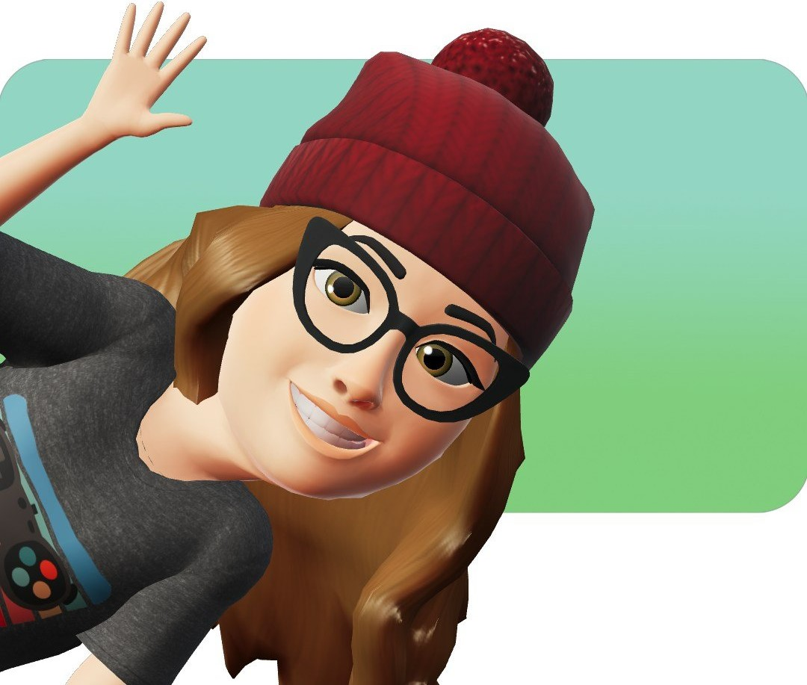

 Callie Pretty (she/her) Programmer Halifax, NS callie.pretty@gmail.com Key Summary Mature, focused IT Programming student at NSCC with a passion for problem solving, mathematics and art/animation. Potential ringer for company softball teams. Education NSCC - IT Programming January 2023 - Present Java Script Programming HTML/CSS Website Design Database Management Operating Systems Administration Professional Practices in Communication Centre for Arts & Technology - Animation Production October 2009 - January 2012 3D Animation 2D Animation 3D Modeling 2D Texturing Raytraced Lighting Software Autodesk Maya 3D Studio Max Photoshop Windows VS Studio Git VM Ware Microsoft Office